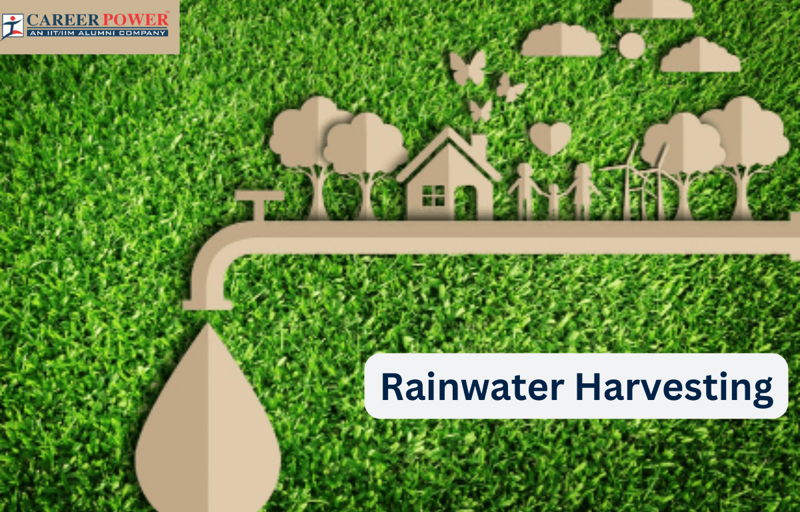

एक ऐसी दुनिया में जहाँ पर्यावरणीय चुनौतियाँ बढ़ रही हैं, नवाचारी समाधान की जरूरत पहले से कहीं अधिक है। KK Create and Build अपने नवीनतम प्रयास के साथ एक स्थायी भविष्य की दिशा में महत्वपूर्ण कदम बढ़ा रहा है। राधा निवास, नायगांव, वसई-विरार में एक अत्याधुनिक वर्षा जल संचयन प्रणाली का परिचय देते हुए, राधा निवास ईको-फ्रेंडली जीवन के लिए नए मानक स्थापित कर रहा है। यह क्रांतिकारी परियोजना स्थायी विकास और जल संरक्षण के प्रति एक प्रतिबद्धता को दर्शाती है, जिसे अन्य आवासीय समुदाय एक आदर्श के रूप में अपनाएंगे।
वर्षा जल संचयन क्या है?
वर्षा जल संचयन एक ऐसी विधि है जिसमें वर्षा के पानी को इकट्ठा और संग्रहीत किया जाता है। वर्षा के पानी को बह जाने के बजाय, इसे छतों, रास्तों, या अन्य सतहों से एकत्रित किया जाता है और टैंकों या भूमिगत जलाशयों में संग्रहीत किया जाता है। यह पानी बाद में सिंचाई, फ्लशिंग, और उचित उपचार के साथ पेयजल उपयोग के लिए भी इस्तेमाल किया जा सकता है।
राधा निवास की नवाचारी दृष्टिकोण
राधा निवास में, KK Create and Build ने एक अत्याधुनिक वर्षा जल संचयन प्रणाली को एकीकृत किया है जो समुदाय की बाहरी जल स्रोतों पर निर्भरता को काफी हद तक कम करने का लक्ष्य रखती है। यह प्रणाली प्रभावी ढंग से वर्षा के पानी को एकत्र और संग्रहीत करने के लिए डिजाइन की गई है, जिससे निवासियों के लिए एक विश्वसनीय और स्थायी जल आपूर्ति सुनिश्चित होती है।
राधा निवास की वर्षा जल संचयन प्रणाली की प्रमुख विशेषताएँ
- उन्नत संग्रह तंत्र: छतों और अन्य सतहों पर उच्च दक्षता वाले वर्षा जल संग्रह यूनिट्स का उपयोग करके पानी के अधिकतम संग्रह को सुनिश्चित किया जाता है।
- उच्च गुणवत्ता की फ़िल्ट्रेशन: संग्रहित वर्षा के पानी को संग्रहण से पहले मलबे और अशुद्धियों को हटाने के लिए फ़िल्टर किया जाता है, जिससे यह साफ और उपयोगी होता है।
- पर्याप्त संग्रहण क्षमता: संग्रहित वर्षा जल को बड़े, अच्छे से रखे गए टैंकों में संग्रहीत किया जाता है, जिससे सूखे के समय भी जल का पर्याप्त भंडार उपलब्ध रहता है।
- एकीकृत उपयोग: एकत्रित पानी का उपयोग सिंचाई और फ्लशिंग जैसे गैर-पेय उपयोगों के लिए किया जाता है, जिससे उपचारित जल की खपत कम होती है।
- ईको-फ्रेंडली प्रभाव: बाहरी जल स्रोतों की निर्भरता को कम करके, यह प्रणाली प्राकृतिक जल संसाधनों के संरक्षण में मदद करती है और सर्कुलर वाटर इकोनॉमी का समर्थन करती है।
राधा निवास के लिए वर्षा जल संचयन के लाभ
- जल संरक्षण: वर्षा जल संचयन बाहरी जल आपूर्ति पर निर्भरता को कम करता है, जिससे मूल्यवान ताजे जल संसाधनों का संरक्षण होता है।
- लागत की दक्षता: सिंचाई और अन्य गैर-पेय उपयोगों के लिए संग्रहित वर्षा जल का उपयोग करके, निवासी अपने जल बिलों को कम कर सकते हैं और कुल लागत में बचत कर सकते हैं।
- पर्यावरणीय सुरक्षा: बाहरी जल स्रोतों की मांग को कम करके, स्थानीय जल निकायों और पारिस्थितिक तंत्र के संरक्षण में मदद करता है, जिससे एक स्वस्थ पर्यावरण में योगदान होता है।
- सहजता: एक स्वतंत्र जल स्रोत होने से, समुदाय की जल आपूर्ति के लिए सूखा और जल की कमी की स्थिति में बेहतर सहनशीलता होती है।
- स्थायी जीवन: यह प्रणाली राधा निवास की स्थिरता और जिम्मेदार जीवन के प्रति प्रतिबद्धता के साथ मेल खाती है, और भविष्य के विकास के लिए एक आदर्श सेट करती है।
KK Create and Build: स्थायी जीवन में अग्रणी
KK Create and Build हमेशा अपने प्रोजेक्ट्स में नवाचारी और स्थायी प्रथाओं को एकीकृत करने में सबसे आगे रहा है। राधा निवास में वर्षा जल संचयन प्रणाली के परिचय के साथ, वे केवल घर नहीं बना रहे हैं बल्कि ईको-फ्रेंडली जीवन के एक नए दृष्टिकोण को अग्रणी बना रहे हैं। यह पहल उनके पर्यावरणीय जिम्मेदारी और हरित भविष्य के प्रति दृष्टिकोण को दर्शाती है।
नायगांव में जल प्रबंधन का भविष्य
राधा निवास की वर्षा जल संचयन प्रणाली केवल एक विशेषता नहीं है; यह नायगांव, वसई-विरार, और उससे आगे के भविष्य के विकास के लिए एक मॉडल है। जैसे-जैसे पर्यावरणीय मुद्दों के प्रति जागरूकता बढ़ती है, ऐसे समाधान नए आवासीय प्रोजेक्ट्स में महत्वपूर्ण होते जाएंगे।
भविष्य के गृहस्वामियों और निवेशकों के लिए, राधा निवास एक ऐसा समुदाय बनने का अनूठा अवसर प्रदान करता है जो स्थिरता और नवाचार को प्राथमिकता देता है। राधा निवास में रहने का चुनाव करके, आप एक ऐसे घर में निवेश कर रहे हैं जो उन्नत हरी तकनीकों का समर्थन करता है और एक अधिक स्थायी भविष्य में योगदान करता है।
KK Create and Build का राधा निवास स्थायी जीवन की दिशा में एक महत्वपूर्ण कदम है। वर्षा जल संचयन जैसे नवाचारी समाधानों को अपनाकर, आप केवल एक सुंदर और आधुनिक घर का चयन नहीं कर रहे हैं, बल्कि एक हरे और अधिक जिम्मेदार भविष्य की दिशा में भी शामिल हो रहे हैं।